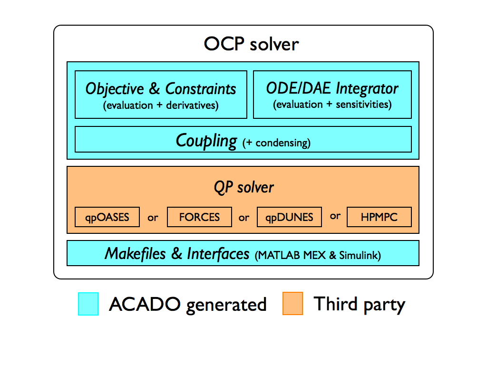

The ACADO Code Generation ToolNonlinear Model Predictive Control and Moving Horizon EstimationThe tool allows to export optimized, highly efficient C-code to solve nonlinear model predictive control (NMPC) of the following form: \[ \begin{align} \displaystyle \min_{ \begin{array}{c} x_0, \ldots, x_{N} \\ u_0, \ldots, u_{N-1} \end{array}} & \displaystyle\sum_{k=0}^{N-1} ||h(x_k,u_k) - \tilde{y}_k ||^2_{W_{k}} +||h_{N}(x_N) - \tilde{y}_N||^2_{W_{N}} \label{eq:nmpc_obj}\\[1em] \text{s.t.} \quad\quad & x_0 = \hat x_0 \label{eq:nmpc_init_con}\\[0.5em] & x_{k+1} = F(x_k, u_k, z_k),\ \text{for } k = 0, \ldots, N-1 \label{eq:nmpc_dynamics}\\[0.5em] & u_k^\text{lo} \leq u_k \leq u_k^\text{up},\ \text{for } k = 0, \ldots, N-1 \label{eq:nmpc_box_controls}\\[0.5em] & x_k^\text{lo} \leq x_k \leq x_k^\text{up},\ \text{for } k = 0, \ldots, N \label{eq:nmpc_box_states}\\[0.5em] & r_k^\text{lo} \leq r_k(x_k, u_k) \leq r_k^\text{up},\ \text{for } k = 0, \ldots, N-1 \label{eq:nmpc_path_con}\\[0.5em] & r_N^\text{lo} \leq r_N(x_n) \leq r_N^\text{up} \label{eq:nmpc_point_con} \end{align} \] Here, \(x\in\text{R}^{n_x}\) denotes the differential state, \(u\in\text{R}^{n_u}\) the control input, \(z\in\text{R}^{n_z}\) the algebraic variable, and \(\hat{x}_0\in\text{R}^{n_x}\) denotes the current state measurement. Reference functions in \(\eqref{eq:nmpc_obj}\) are denoted with \(h\in\text{R}^{n_y}\) and \(h_N\in\text{R}^{n_{y,N}}\), and the weighting matrices are denoted with \(W_k\in\text{R}^{n_y\times n_y}\) and \(W_N\in\text{R}^{n_{y,N}\times n_{y,N}}\). Variables \(\tilde{y}_k\in\text{R}^{n_y}\) and \(\tilde{y}_N\in\text{R}^{n_{y,N}}\) denote time-varying references. Bounds \(\underline u \leq \overline u\in\text{R}^{n_u}\) on control inputs \(\eqref{eq:nmpc_box_controls}\) and \(\underline x \leq \overline x\in\text{R}^{n_x}\) on states \(\eqref{eq:nmpc_box_states}\) can change along the horizon. Equations \(\eqref{eq:nmpc_path_con}\) and \(\eqref{eq:nmpc_point_con}\) define path and point constraint, respectively, with constraint functions \(r_k\in\text{R}^{n_{r,k}}\) and \(r_N\in\text{R}^{n_{r,N}}\). The right-hand side function \(F\) defined a dicretized ordinary differential equation (ODE) or differential algebraic equation (DAE). Similarly, moving horizon estimation (MHE) problems of the following form can be formulated: \[ \begin{align} \displaystyle \min_{ \begin{array}{c} x_0, \ldots, x_{N} \\ u_0, \ldots, u_{N-1} \end{array}} & ||x_0 - x_\text{AC}||^2_{S_\text{AC}} + \displaystyle\sum_{k=0}^{N-1} ||h(x_k,u_k) - \tilde{y}_k ||^2_{W_{k}} +\||h_{N}(x_N) - \tilde{y}_N||^2_{W_{N}} \label{eq:mhe_obj}\\[1em] \text{s.t.} \quad\quad & x_{k+1} = F(x_k, u_k, z_k),\ \text{for } k = 0, \ldots, N-1 \label{eq:mhe_dynamics}\\[0.5em] & u_k^\text{lo} \leq u_k \leq u_k^\text{up},\ \text{for } k = 0, \ldots, N-1 \label{eq:mhe_box_controls}\\[0.5em] & x_k^\text{lo} \leq x_k \leq x_k^\text{up},\ \text{for } k = 0, \ldots, N \label{eq:mhe_box_states}\\[0.5em] & r_k^\text{lo} \leq r_k(x_k, u_k) \leq r_k^\text{up},\ \text{for } k = 0, \ldots, N-1 \label{eq:mhe_path_con}\\[0.5em] & r_N^\text{lo} \leq r_N(x_n) \leq r_N^\text{up}. \label{eq:mhe_point_con} \end{align} \] In the context of MHE, functions \(h\) and \(h_N\) denote measurement functions. The optional first term in \(\eqref{eq:mhe_obj}\) denotes the arrival cost. The tool exports highly efficient C-code for solving nonlinear MPC and MHE problems by means of the real-time iteration scheme with Gauss-Newton Hessian approximation. Discretization of the time-continuous ODEs and DAEs is done via shooting techniques. The resulting large but sparse QP can be optionaly condensed and passed to dense linear algebra QP solver qpOASES (embedded variant) that is employing an active set method. Alternatively, one can use:
More details on the implemented algorithms and how the toolkit exports them can be found in the manual or in the publications. As a final product, the user gets a fully customized OCP solver (in C-code). Software layout of such a solver is illustrated below.

Standalone integratorsEmbedded integrators with efficient sensitivity propagation are part of the crucial algorithmic tools necessary to implement real-time optimal control. The online linearization of constraints imposing the model equations, is typically the bottleneck of the RTI scheme. Targeting real-time applications, a deterministic runtime for the used integration methods is also rather important. Parameters such as the step size and order of the method are therefore kept fixed. The automatic generation of tailored Explicit Runge-Kutta (ERK) methods using the Variational Differential Equations (VDE) for computing sensitivities has been presented and shown practical in [Houska2011, Vukov2012]. This idea was extended in the more recent work on code generation for Implicit Runge-Kutta (IRK) methods [Quirynen2012a]. Tailored techniques for the efficient computation of their sensitivity information have been discussed in [Quirynen2012]. The application of these embedded, implicit solvers to systems of Differential Algebraic Equations (DAE) and the motivation for continuous output has been presented in [Quirynen2013]. The latter has been shown very useful for the implementation of MHE with multi-rate measurements, although it also has possible applications for NMPC as illustrated in [Quirynen2014a]. A three stage model formulation is discussed in [Quirynen2013a] as a way to exploit common linear subsystems in models for nonlinear optimal control. Novel algorithms can be easily prototyped by employing these auto generated integrators within an optimization framework. |